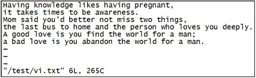
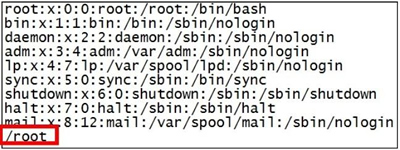
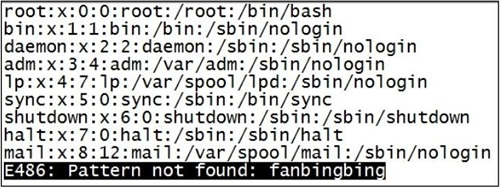
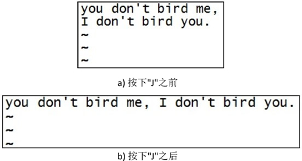
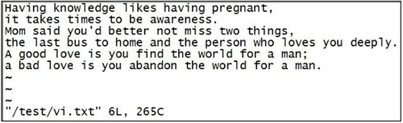
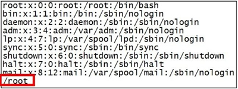
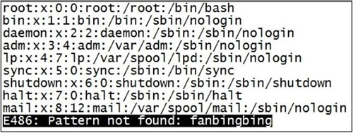
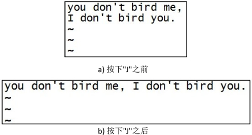

Linux Vim基本操作（文件的打开和编辑）完全攻略（有图有真相）
《Vim三种工作模式》一节给大家详细介绍了 Vim 的 3 种工作模式，本节来学习如何使用 Vim 编辑文件。
首先学习如何使用 Vim 打开文件。

图 1 Vim 打开文件
除此之外，我们还可以利用下表中打开文件的命令格式，针对特定情形使用适当的打开方式，可以大大提高我们的效率。
例如，在 /etc/passwd.vi 文件中查找字符串 "root"，则运行命令如图 5 所示。

图 5 使用 Vim 进行查找
如果在文件中并没有找到所要查找的字符串，则在文件底部会出现 "Pattern not found" 提示，如图 6 所示。

图 6 未查找到指定字符串的提示
在查找过程中需要注意的是，要查找的字符串是严格区分大小写的，如查找 "shenchao" 和 "ShenChao" 会得到不同的结果。
例如，要将某文件中所有的 "root" 替换为 "liudehua"，则有两种输入命令，分别为：
如果刚才的命令变成

图 10 按下 "J" 键前后
如果不小心误删除了文件内容，则可以通过 "u" 键来撤销刚才执行的命令。如果要撤销刚才的多次操作，可以多按几次 "u" 键。
需要注意的是，"w!" 和 "wq!" 等类似的指令，通常用于对文件没有写权限的时候（显示 readonly，如图 12 所示），但如果你是文件的所有者或者 root 用户，就可以强制执行。

图 12 只读文件
首先学习如何使用 Vim 打开文件。
Vim 打开文件
使用 Vim 打开文件很简单，例如在命令行模式下打开一个自己编写的文件 /test/vi.test，打开方法如下：[root@itxdl ~]# vim /test/vi.test
刚打开文件时 Vim 处于命令模式，此时文件的下方会显示文件的一些信息，包括文件的总行数和字符数，以及当前光标所在的位置等，此时可以使用插入命令进入输入模式对文件进行编辑，如图 1 所示。
图 1 Vim 打开文件
| Vi 使用的选项 | 说 明 |
|---|---|
| vim filename | 打开或新建一个文件，并将光标置于第一行的首部 |
| vim -r filename | 恢复上次 vim 打开时崩溃的文件 |
| vim -R filename | 把指定的文件以只读方式放入 Vim 编辑器中 |
| vim + filename | 打开文件，并将光标置于最后一行的首部 |
| vi +n filename | 打开文件，并将光标置于第 n 行的首部 |
| vi +/pattern filename | 打幵文件，并将光标置于第一个与 pattern 匹配的位置 |
| vi -c command filename | 在对文件进行编辑前，先执行指定的命令 |
使用 Vim 进行编辑
同样，Vim 提供了大量的编辑快捷键，主要可分为以下几类。Vim 插入文本
从命令模式进入输入模式进行编辑，可以按下 I、i、O、o、A、a 等键来完成，使用不同的键，光标所处的位置不同，如表 3 所示。| 快捷键 | 功能描述 |
|---|---|
| i | 在当前光标所在位置插入随后输入的文本，光标后的文本相应向右移动 |
| I | 在光标所在行的行首插入随后输入的文本，行首是该行的第一个非空白字符，相当于光标移动到行首执行 i 命令 |
| o | 在光标所在行的下面插入新的一行。光标停在空行首，等待输入文本 |
| O（大写） | 在光标所在行的上面插入新的一行。光标停在空行的行首，等待输入文本 |
| a | 在当前光标所在位置之后插入随后输入的文本 |
| A | 在光标所在行的行尾插入随后输入的文本，相当于光标移动到行尾再执行 a 命令 |
Vim 查找文本
| 快捷键 | 功能描述 |
|---|---|
| /abc | 从光标所在位置向前查找字符串 abc |
| /^abc | 查找以 abc 为行首的行 |
| /abc$ | 查找以 abc 为行尾的行 |
| ?abc | 从光标所在为主向后查找字符串 abc |
| n | 向同一方向重复上次的查找指令 |
| N | 向相反方向重复上次的查找指定 |
例如，在 /etc/passwd.vi 文件中查找字符串 "root"，则运行命令如图 5 所示。

图 5 使用 Vim 进行查找
如果在文件中并没有找到所要查找的字符串，则在文件底部会出现 "Pattern not found" 提示，如图 6 所示。

图 6 未查找到指定字符串的提示
在查找过程中需要注意的是，要查找的字符串是严格区分大小写的，如查找 "shenchao" 和 "ShenChao" 会得到不同的结果。
如果想忽略大小写，则输入命令 ":set ic"；调整回来输入":set noic"。
如果在字符串中出现特殊符号，则需要加上转义字符 "\"。常见的特殊符号有 \、*、?、$ 等。如果出现这些字符，例如，要查找字符串 "10$"，则需要在命令模式中输入 "/10\$"。Vim 替换文本
| 快捷键 | 功能描述 |
|---|---|
| r | 替换光标所在位置的字符 |
| R | 从光标所在位置开始替换字符，其输入内容会覆盖掉后面等长的文本内容，按“Esc”可以结束 |
| :s/a1/a2/g | 将当前光标所在行中的所有 a1 用 a2 替换 |
| :n1,n2s/a1/a2/g | 将文件中 n1 到 n2 行中所有 a1 都用 a2 替换 |
| :g/a1/a2/g | 将文件中所有的 a1 都用 a2 替换 |
例如，要将某文件中所有的 "root" 替换为 "liudehua"，则有两种输入命令，分别为：
:1, $s/root/liudehua/g
或
:%s/root/liudehua/g
如果刚才的命令变成
:10,20 s/root/liudehua/g，则只替换从第 10 行到第 20 行的 "root"。Vim删除文本
| 快捷键 | 功能描述 |
|---|---|
| x | 删除光标所在位置的字符 |
| dd | 删除光标所在行 |
| ndd | 删除当前行（包括此行）后 n 行文本 |
| dG | 删除光标所在行一直到文件末尾的所有内容 |
| D | 删除光标位置到行尾的内容 |
| :a1,a2d | 函数从 a1 行到 a2 行的文本内容 |
注意，被删除的内容并没有真正删除，都放在了剪贴板中。将光标移动到指定位置处，按下 "p" 键，就可以将刚才删除的内容又粘贴到此处。
Vim复制和粘贴文本
| 快捷键 | 功能描述 |
|---|---|
| p | 将剪贴板中的内容粘贴到光标后 |
| P（大写） | 将剪贴板中的内容粘贴到光标前 |
| y | 复制已选中的文本到剪贴板 |
| yy | 将光标所在行复制到剪贴板，此命令前可以加数字 n，可复制多行 |
| yw | 将光标位置的单词复制到剪贴板 |
Vim其他常用快捷键
某些情况下，可能需要把两行进行连接。比如说，下面的文件中有两行文本，现在需要将其合并成一行（实际上就是将两行间的换行符去掉）。可以直接在命令模式中按下 "J" 键，按下前后如图 10 所示。
图 10 按下 "J" 键前后
如果不小心误删除了文件内容，则可以通过 "u" 键来撤销刚才执行的命令。如果要撤销刚才的多次操作，可以多按几次 "u" 键。
Vim 保存退出文本
Vim 的保存和退出是在编辑模式中进行的，其常用命令如下表所示。| 命令 | 功能描述 |
|---|---|
| :wq | 保存并退出 Vim 编辑器 |
| :wq! | 保存并强制退出 Vim 编辑器 |
| :q | 不保存就退出 Vim 编辑器 |
| :q! | 不保存，且强制退出 Vim 编辑器 |
| :w | 保存但是不退出 Vim 编辑器 |
| :w! | 强制保存文本 |
| :w filename | 另存到 filename 文件 |
| x！ | 保存文本，并退出 Vim 编辑器，更通用的一个 vim 命令 |
| ZZ | 直接退出 Vim 编辑器 |
需要注意的是，"w!" 和 "wq!" 等类似的指令，通常用于对文件没有写权限的时候（显示 readonly，如图 12 所示），但如果你是文件的所有者或者 root 用户，就可以强制执行。
图 12 只读文件
关注公众号「站长严长生」，在手机上阅读所有教程，随时随地都能学习。内含一款搜索神器，免费下载全网书籍和视频。

微信扫码关注公众号